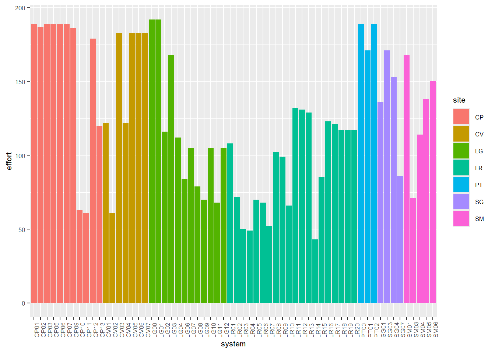

7 Tasa de registro vacunos y perros domésticos
Se quiere obtener la tasa de registro (TR) del ganado vacuno y de los perros domésticos para dos tipos de resolución; a nivel de cámara y a nivel de sistema.
La TR para cualquier especie se calcula con la siguiente expresión.
\[\textrm{TR} = \frac{\textrm{Total registros independientes}}{\textrm{Esfuerzo de muestreo}}\]
En el caso del cálculo a nivel de sistema tanto el esfuerzo como el total de registros es la sumatorio de las tres cámaras. Cuando se calcula a nivel de cámara se utilizan el total de registros y esfuerzo para la misma.
Pasemos al calculo de este parámetro, primero se cargan los registros de las camaras trampa.
Luego se filtran solo los registros de B. taurus, C. familiaris se crea una columna llamada sistema (system) y se seleccionan las columnas de interés.
tr_data <- data %>%
filter(sp %in% c("Btau", "Cfam")) %>%
mutate(system = str_sub(camera, 1, 4)) %>%
select(system, camera, sp)7.0.1 Nivel sistema
En primer lugar se busca el esfuerzo para cada sistema.
system_effort <- read_rds(file = "data_processed/camera_data.RData") %>%
mutate(system = str_sub(camera, 1, 4)) %>%
select(system, camera, effort) %>%
group_by(system) %>%
summarise(effort = sum(effort))Esfuerzo de todos los sitemas.

Luego se contabiliza la cantidad de registros independientes de cada especie en los sistemas.
tr_system <- tr_data %>%
select(system, sp) %>%
group_by(system, sp) %>%
summarise(count = n()) %>%
ungroup()Y se realiza el cálculo.
tr_system <- tr_system %>%
left_join(system_effort, by = join_by(system)) %>%
group_by(system, sp) %>%
summarise(tr_system = count/effort)7.0.2 Nivel camara
En primer lugar se carga el esfuerzo para cada camara.
Se cuenta la cantidad de regitros independientes en cada cámara para las especies de interés.
Se realiza el calculo de la tasa de registro.
7.0.3 Tabla única
Se unen los datos en una tabla única para mejor organización, en ella existen los valores de la tasa de registro tanto a nivel de sistema como de camara.
tr_results <- tr_camera %>%
left_join(tr_system, join_by(system, sp)) %>%
select(system, camera, sp, tr_system, tr_camera)Y por último se añaden estos datos a la planilla general. Para esto hay que modificar la tabla un poco, me refiero:
load("data_processed/datos_procesados_v2.RData")
# Obtener todas las cámaras con registro de cualquier especie.
all_cameras <- data %>%
select(camera) %>%
pull()
# Modificar resultados de TR y hacerlos "anchos"
tr <- tr_results %>%
pivot_wider(names_from = sp, values_from = c(tr_system, tr_camera), names_sep = "_")
# Verificar qué camaras son las que faltan en el cálculo de la tr, ya que no poseen registros ni de Btau ni de Cfam
missing_cameras <- setdiff(all_cameras, tr$camera)
# Creamos un tibble con estos datos faltantes
missing_tibble <- tibble::tibble(
system = substr(missing_cameras, 1, 4),
camera = missing_cameras,
tr_system_Btau = 0,
tr_system_Cfam = 0,
tr_camera_Btau = 0,
tr_camera_Cfam = 0
)
# Y los unimos en un mismo set de datos
tr <- bind_rows(tr, missing_tibble)
# Reemplzamos todos los NA por 0.
tr[is.na(tr)] <- 0Ahora sí, se pueden cargar los datos de tasa de registro a la planilla general.
Y se obtiene: